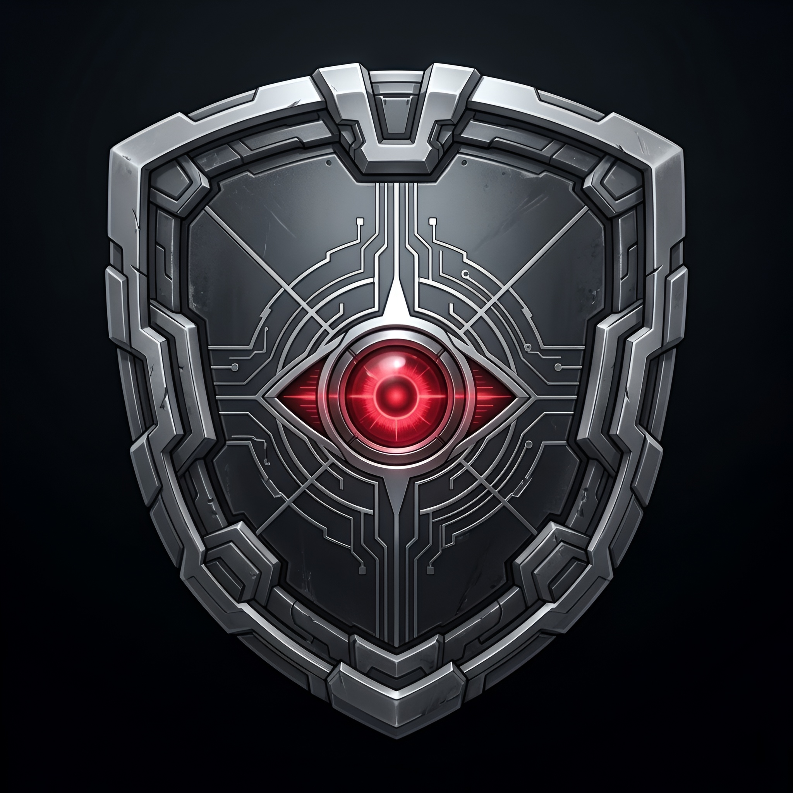
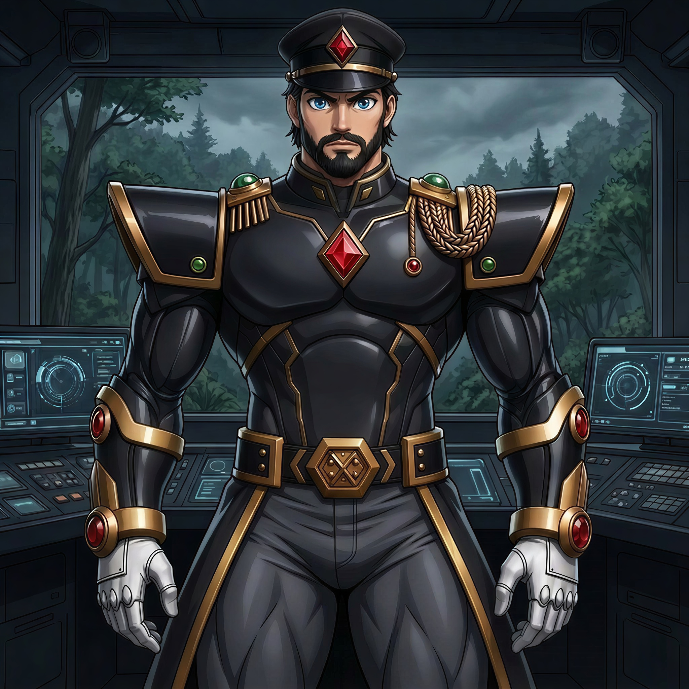
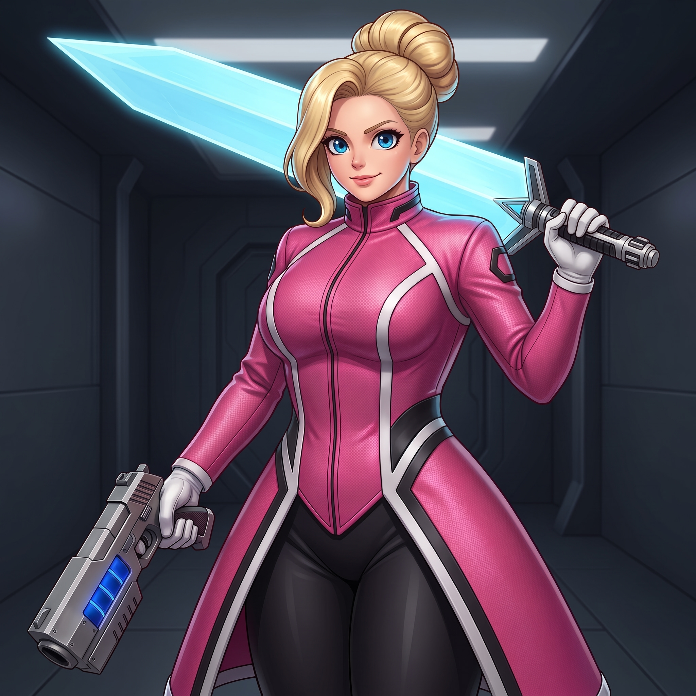
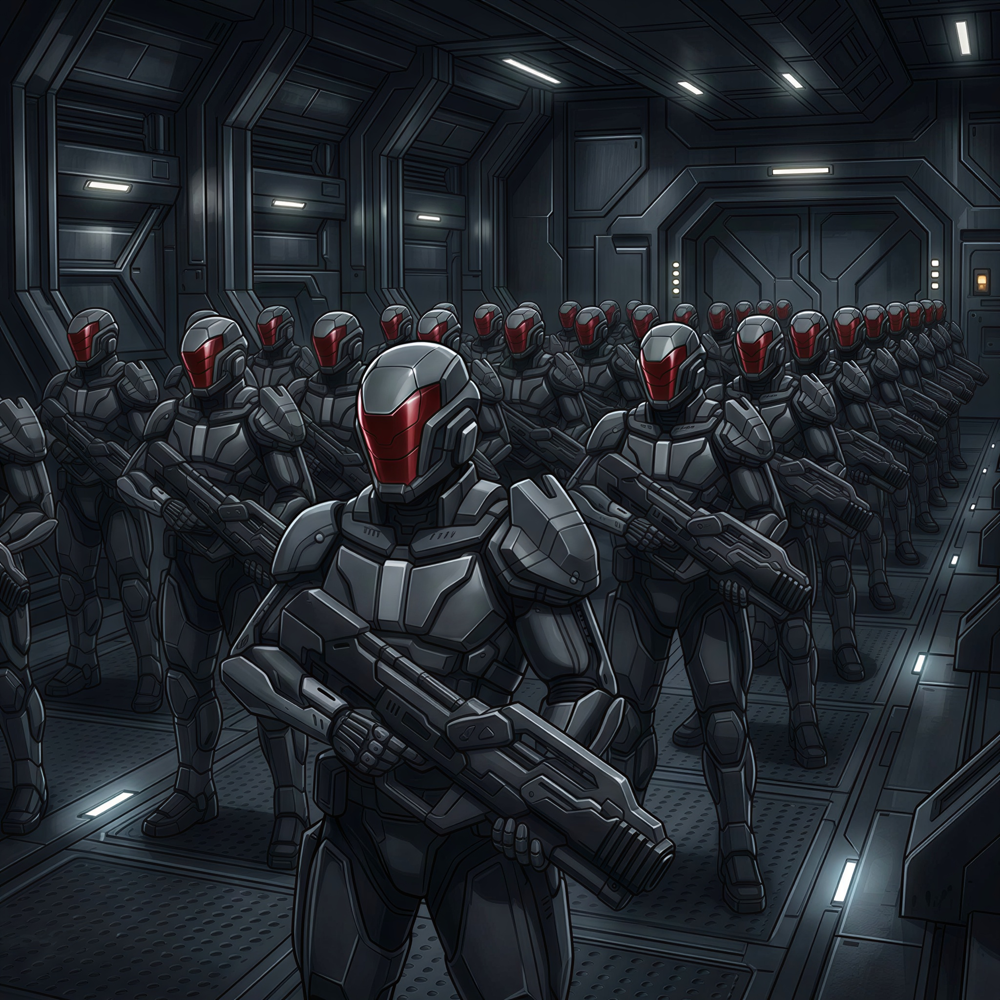

Em 1992, Auron Valcrest fundou a Sentinel Exo-Force (S.E.F.) no Alasca como resposta direta ao crescimento alarmante de supervilões e monstros, após sobreviver sozinho a um massacre que expôs a fragilidade das defesas convencionais. Criada para agir onde governos falham, a organização passou a conduzir operações clandestinas em escala global, sempre com a missão clara de capturar e neutralizar inimigos capazes de colocar a humanidade em risco. A Sentinel Exo-Force conta com centenas de soldados conhecidos como PX-Troopers, tropas altamente treinadas e equipadas com armaduras avançadas, apoiadas por unidades robóticas de combate, drones de vigilância e sistemas autônomos projetados para reconhecimento, contenção e suporte em campo. Esses recursos atuam juntos em incursões táticas, extrações de alvos de alto risco e operações onde apenas soldados não seriam suficientes, enquanto a S.E.F. evita interferir abertamente quando heróis conseguem conter a ameaça. Desde a fundação dos Pulsebreakers, Auron acompanhou diversas missões da equipe no Canadá, levando a S.E.F. a se tornar uma de suas principais aliadas.

Registro: 09/11/1950 | 1,97 m | 155 kg
História: Auron Valcrest nasceu nos Estados Unidos em 1950, crescendo em uma família de tradição militar e disciplina rígida. Desde jovem, destacou-se como um estrategista militar excepcional, sendo recrutado para operações secretas internacionais ainda muito novo. Em 1984, durante um confronto contra uma entidade tecnomórfica, foi exposto a uma nanotecnologia alienígena que fundiu seu corpo a partículas inteligentes, concedendo-lhe controle avançado sobre máquinas, sistemas e estruturas tecnológicas. Em 1992, durante uma missão, sua unidade foi massacrada por monstros que surgiram inexplicavelmente, e Auron foi o único sobrevivente, usando suas habilidades para transformar o próprio corpo em armas e estruturas tecnológicas enquanto exterminava sozinho todas as criaturas. Após o incidente, fundou a Sentinel Exo-Force no Alasca, uma organização dedicada a conter supervilões e ameaças monstruosas, operando clandestinamente ao redor do mundo diante de ameaças de escala global.

Registro: 12/02/1992 | 1,70 m | 67 kg
História: Astrid Lysgaard nasceu em uma vila isolada na Noruega, completamente fora do radar do mundo moderno. Ainda criança, sua vida mudou quando um dos moradores da vila acabou se transformando em um monstro, desencadeando um ataque devastador que espalhou caos e destruição pela região. A situação só não se tornou ainda pior graças à intervenção de Auron Valcrest e dos PX-Troopers, que contiveram a ameaça e impediram que a tragédia se agravasse. Aquele dia marcou Astrid para sempre, transformando admiração em obsessão, e ao atingir a maioridade ela se mudou para o Alasca em busca da Sentinel Exo-Force, onde passou com excelência em todos os testes para se tornar uma PX-Trooper após anos idolatrando as forças que salvaram sua terra natal. Seu desempenho excepcional a fez evoluir rapidamente dentro da organização, destacando-se em missões de alto risco até conquistar a confiança total de Auron e assumir o posto de seu braço direito. Atualmente, Astrid atua na linha de frente das operações mais críticas, empunhando como arma principal um sabre de luz que ela mesma construiu e utilizando braceletes tecnológicos avançados em combate.

Registro: 1,88 a 1,95 m | 110 a 120 kg
História: Os PX-Troopers são a tropa de elite da Sentinel Exo-Force, formados a partir de um processo de seleção implacável que elimina qualquer sinal de fraqueza física ou mental. Desde o recrutamento, passam por um treinamento brutal, com combates reais, privação extrema, simulações de morte iminente e missões em ambientes hostis, forjando soldados que obedecem ordens sem hesitação. No campo de batalha, atuam como uma força precisa e esmagadora, avançando de forma coordenada para conter supervilões, monstros e ameaças de escala global sem questionar o custo.